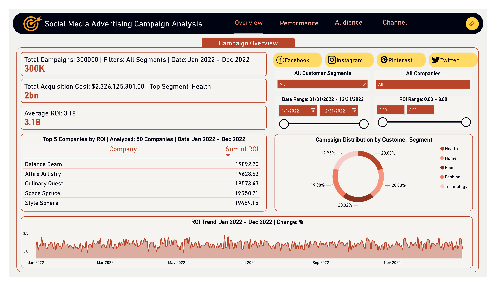
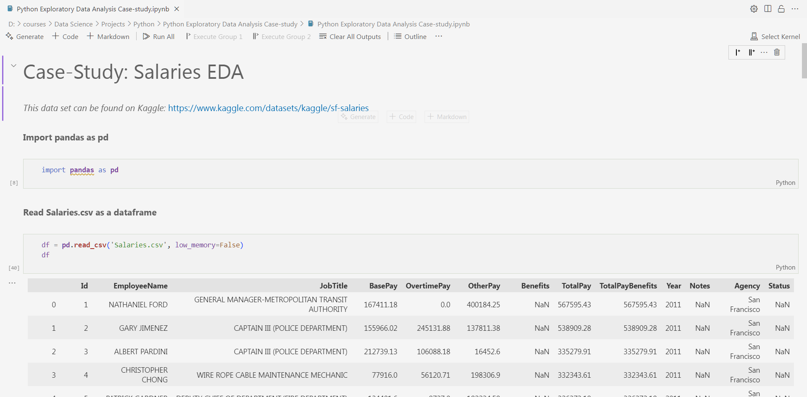
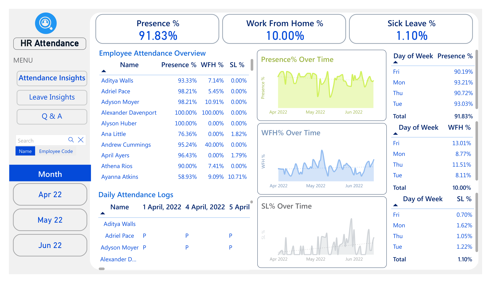
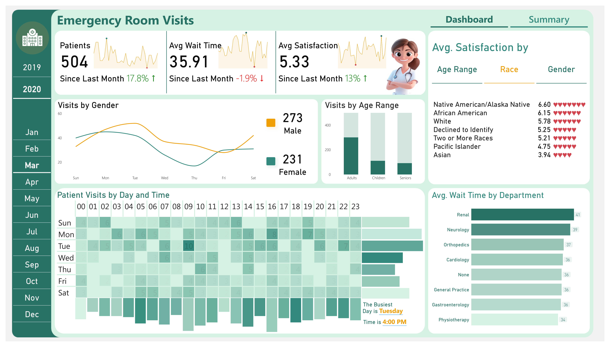
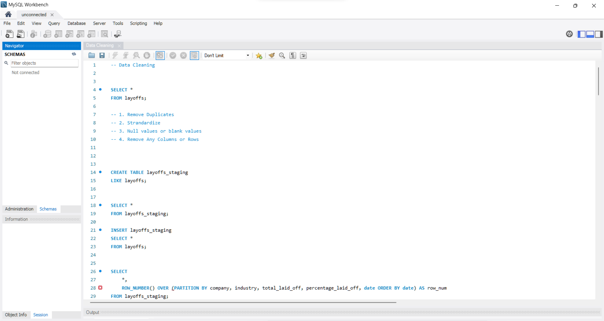

Social Media Advertising Dashboard
Technologies: Power BI, Python
Delivered a Power BI and Python-based dashboard resolving ROI
data issues and highlighting a 35% click contribution from top
channels.

Startup Expansion Analysis Dashboard
Technologies: Power BI, Python
Interactive dashboard analyzing a startup's expansion
performance, focusing on revenue, ROI, and marketing
efficiency.

Python EDA Case Study
Technologies: Python
Implemented exploratory data analysis techniques to analyze
employee salary data, uncover trends, and provide insights.

HR Analytics Dashboard
Technologies: Power BI, DAX
Designed an interactive HR dashboard with dynamic filters, DAX
measures, and visual insights into employee attendance.

IMDB Top 250 Movies Dashboard
Technologies: Power BI
Visualized cinema trends, ratings, and distributions using an
interactive dashboard analyzing top IMDB movies.

Emergency Room Dashboard
Technologies: Power BI, DAX
Analyzed patient satisfaction, visit trends, and demographics
using advanced DAX measures in Power BI.

Global Layoffs Analysis
Technologies: SQL
Used SQL to uncover trends in workforce reduction across
industries, funding stages, and regions.

Healthcare Analytics Dashboard
Technologies: Power BI
Analyzed hospital waitlists, patient demographics, and service
trends with an interactive dashboard.

Regional Sales Dashboard
Technologies: Power BI
Designed a dashboard to analyze regional sales trends,
identifying growth opportunities and increasing profitability.